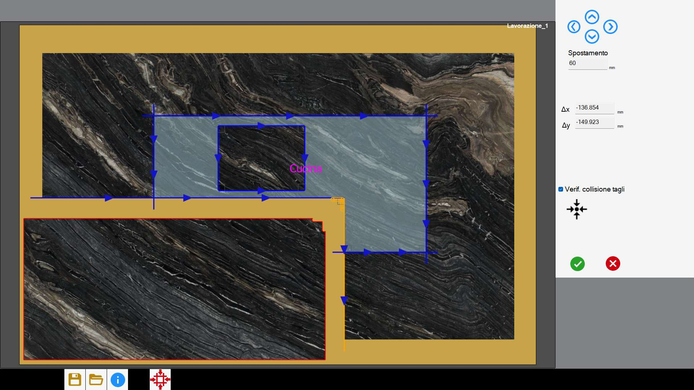
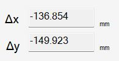
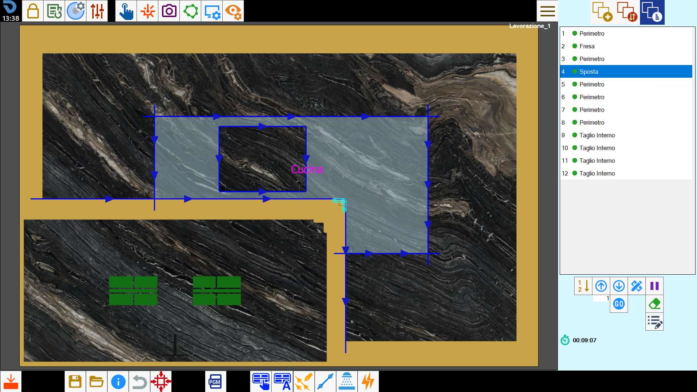

Esta funcionalidade permite dividir a chapa e deslocar o material com as ventosas.

Botões
 | Movimentação manual |
 | Movimentação automática |
Movimentação manual
Através desta função, o operador pode dividir a chapa utilizando cortes e deslocar o material para a posição pretendida através das ventosas.
Consoante o número de cortes selecionados, esta função apresenta dois modos.
Modo de seleção única
Para executar um deslocamento através das ventosas, é necessário selecionar um corte com disco, linear ou em arco, e premir o botão.
O corte é prolongado até atingir a borda da chapa, quando possível.
Se o corte selecionado for inclinado, será automaticamente adicionado um corte linear específico para permitir dividir a chapa.
Neste ponto abre-se o painel seguinte, onde é possível especificar a direção, o sentido e a distância do deslocamento pretendido.

Na secção à direita encontram-se estes botões:
 | Deslocamento direcional |
Selecione uma seta na área de trabalho ou prima um dos botões à direita para decidir a direção e o sentido do deslocamento.
A chapa é dividida e deslocada de acordo com o tipo de corte selecionado.
A distância de deslocamento da chapa em ambos os casos pode ser alterada na caixa de texto situada por baixo dos quatro botões direcionais.
O corte selecionado é colocado o mais acima possível na lista de cortes a executar. Imediatamente depois, é executado o deslocamento através das ventosas.
Modo de seleção múltipla
O modo de seleção múltipla permite elevar peças de forma genérica. Para tal, é necessário selecionar os cortes pretendidos para dividir a chapa utilizando o modo de seleção múltipla.

Depois de efetuar a seleção, prima o botão para iniciar o procedimento.
Os cortes selecionados são prolongados, se possível, de modo a formar um percurso contínuo que permita dividir a chapa. Se um ou mais dos cortes selecionados forem inclinados, são automaticamente substituídos por cortes não inclinados.
Neste ponto abre-se o painel seguinte.

Depois de escolher a chapa a deslocar, é possível decidir o deslocamento arrastando-a na área de trabalho ou utilizando um dos seguintes botões:
 | Step |
 | Deslocamento ao longo dos eixos |
 | Verificação de colisão dos cortes |
 | Repor posição original |
Após a confirmação, os cortes selecionados são colocados no topo da lista de cortes a executar. Imediatamente depois, é executado o deslocamento através das ventosas.

O modo de seleção múltipla permite elevar peças de forma genérica e, portanto, também peças em balanço.
A verificação da viabilidade do deslocamento é da responsabilidade do operador.
Regras para uma seleção válida dos cortes
Para dividir corretamente a chapa, é necessário respeitar algumas indicações para a seleção dos cortes.
Os cortes selecionados podem ser cortes com disco, tanto linhas como arcos, fresagens e furos múltiplos em cantos.
Os cortes selecionados devem poder formar um percurso que separe a chapa em duas partes. Não é permitida a seleção de cortes que formem um percurso fechado.
O programa prolonga automaticamente os cortes lineares com disco até encontrar uma solução que permita dividir a chapa. Os cortes em arco, as fresagens e os furos não são alterados automaticamente.
Tendo isto em conta, recomenda-se que o primeiro e o último corte do percurso sejam cortes lineares com disco.Na presença de cantos internos, em que o resíduo deixado pelo disco não permite separar completamente o material, é necessário inserir fresagens em vértices ou furos múltiplos.
A penetração dos cortes selecionados deve ser suficiente para permitir separar a chapa.
O primeiro e o último corte devem necessariamente poder sair da chapa.
Mensagem de operação não possível
Se a operação de movimentação não for considerada possível pelo programa, as causas podem ser as seguintes:
Os cortes escolhidos não são suficientes para criar um percurso que divida a chapa em duas partes;
Os cortes escolhidos formam um percurso fechado;
Os cortes escolhidos não conseguem separar a peça devido ao resíduo deixado pelo disco;
A extensão dos cortes escolhidos danifica outras peças;
A penetração de pelo menos um dos cortes selecionados não é suficiente para separar a chapa;
Movimentação automática
Através desta função, o programa tentará resolver automaticamente situações em que uma ou mais peças na área de trabalho sejam danificadas por outros cortes.

O algoritmo analisa a disposição dos cortes e determina autonomamente como e onde efetuar os deslocamentos, otimizando a sequência das operações.

No entanto, é importante notar que o cálculo automático nem sempre consegue gerir todos os casos. Em situações particularmente complexas, pode ser necessário intervir manualmente para concluir ou corrigir as operações de deslocamento.
Modificar a posição das ventosas
Durante esta fase, o operador pode alterar tanto a posição de preensão das ventosas como a ativação das respetivas áreas de vácuo, para garantir uma preensão ideal e segura do material.
Para isso, selecione o item “Mover“ na lista e prima o botão para modificar os cortes.

Os botões presentes neste painel permitem ao operador interagir com as ventosas.
| Deslocamento direcional |
 | Rotação das ventosas |
 | Esquema do grupo de ventosas |